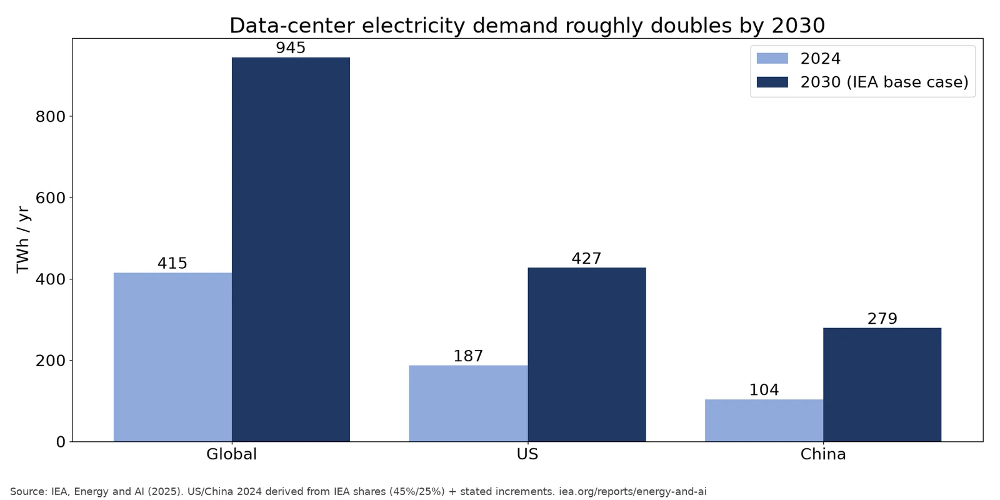
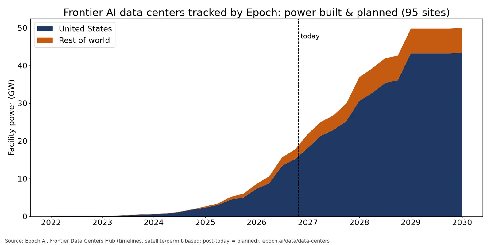
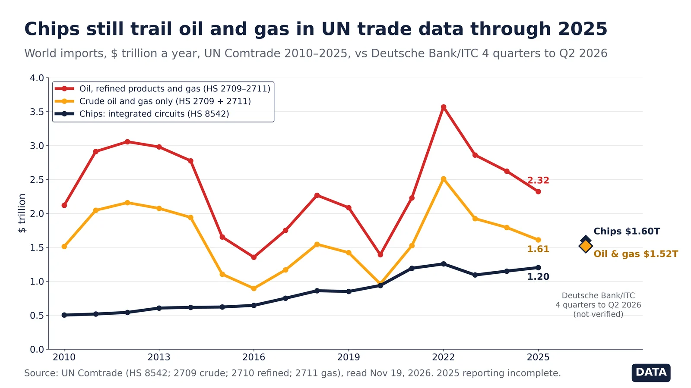

Q1. Capacity Growth

- Physical build-out: the frontier AI sites Epoch tracks reach about 15 GW of US power today and about 43 GW planned by 2030. The rest of the world goes from about 2.6 GW to 6.5 GW. The IEA projects global data-center electricity rising from 415 TWh to about 945 TWh by 2030. (source)
Source: IEA, Energy and AI (2025). US/China 2024 derived from IEA shares (45%/25%) + stated increments.
https://www.iea.org/reports/energy-and-ai/executive-summary

- Physical build-out: the frontier AI sites Epoch tracks reach about 15 GW of US power today and about 43 GW planned by 2030. The rest of the world goes from about 2.6 GW to 6.5 GW. The IEA projects global data-center electricity rising from 415 TWh to about 945 TWh by 2030. (source)
Source: Epoch AI, Frontier Data Centers Hub (timelines, satellite/permit-based; post-today = planned).
https://epoch.ai/data/data-centers

2025 world imports: chips $1.20T, crude plus gas $1.61T, all oil and gas $2.32T. UN Comtrade, Nov 19.
- Data. Data date: Annual 2010–2025 (2025 reporting incomplete), read Nov 19, 2026.
- Nov 16, 2026 (claim): a Deutsche Bank report by FX strategist Mallika Sachdeva, using ITC Trade Map, says semiconductor exports passed oil and gas for the first time over the four quarters to Q2 2026. Rand’s chart shows $1.60T against $1.52T.
- 2025 (Data): UN Comtrade world imports of integrated circuits (HS 8542) were $1.20T, against $1.61T for crude oil and natural gas (HS 2709 + 2711) and $2.32T including refined products (HS 2710).
- 2010–2025 (Data): Rand’s chips line matches Comtrade closely ($0.62T in 2014, $1.26T in 2022). Its oil and gas line does not: Comtrade shows $2.51T for crude plus gas in 2022 and $3.57T with products, against about $2.1T on Rand’s chart.
- 2020 (Data): chips came closest before now, $0.94T against $0.96T for crude plus gas, when oil prices collapsed.
- Jul 2025–Jun 2026 (Data): Brent averaged $76.5 a barrel, up from $68.1 in calendar 2025 (ICE futures via Yahoo). Higher prices make a fall in oil and gas trade to $1.52T less likely, unless the definition is narrow.
- Omitted: the quarterly Q2 2026 crossover itself. ITC Trade Map quarterly data needs a login and Deutsche Bank does not publish its product definition, so the $1.60T and $1.52T figures are not verified.
- Doubt: Chips are catching up fast, but the “first time ever” crossover depends on how oil and gas is defined. On UN data, chips were 52% of oil, products and gas trade in 2025 and 75% of crude and gas alone. The Q2 2026 figures cannot be checked without Trade Map’s subscription data.
Sources: comtradeplus.un.org comtradeapi.un.org: public/v1/preview/C/A/HS marketdash.com: stock-market-news/78038/goodbye-petrodol fxbrokertrust.com: insights/deutsche-bank-semiconductor-tra finance.yahoo.com: quote/BZ%3DF/history Original post (X)

2025 notable AI models: US 59, China 35, EU 1 (Stanford AI Index 2026, Epoch AI). Read Nov 21, 2026.
- Data. Data date: Annual 2023 to Nov 10, 2026; Epoch AI read Nov 21, 2026.
- Apr 2026 (Data): the Stanford AI Index 2026 counts 2025 notable AI models by country: US 59, China 35, South Korea 8, and one each for France, the UK, Canada, Hong Kong and Singapore. Arouet’s 59, 35 and 1 match. Europe as a whole had 2; the EU had 1, Mistral.
- Nov 21, 2026 (Data): Epoch AI’s current notable-models file, which the AI Index uses, now shows 2025 at US 66, China 36, EU27 1 after later additions. For 2026 to Nov 10 it shows US 60, China 34, EU27 2 (Mistral Large 4 and Medium 3.5).
- 2023–2025 (Data): the EU27 count fell from 12 to 5 to 1, while the US went 86, 58, 66 and China 23, 31, 36.
- 2025 (Data): on Epoch’s broader list of models trained with more than 10²³ FLOP, the counts are US 66, China 82, EU27 6 (Teuken, three Mistral models, INSAIT’s MamayLM, AGH’s Lapa). The EU gap holds on every definition.
- Aug 2, 2025 (Data): the EU AI Act’s rules for general-purpose models took effect. The EU decline from 12 to 5 began in 2024, before that date.
- Speculation: blaming regulation, energy prices or talent flight is opinion. The counts alone do not show the cause.
- Doubt: The count is real but small and curated. “Notable” is Epoch’s editorial list, not a census, and models are credited by author affiliation, so joint work can count twice. On the broader compute-based list the EU had 6 models in 2025, still far behind.
Sources: hai.stanford.edu: assets/files/ai_index_report_2026_chapte epoch.ai: data/notable-ai-models epoch.ai: data/notable_ai_models.csv epoch.ai: data/large_scale_ai_models.csv digital-strategy.ec.europa.eu: en/policies/regulatory-framework-ai Original post (X)